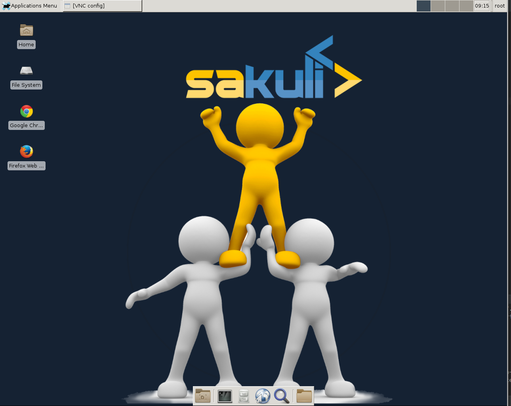
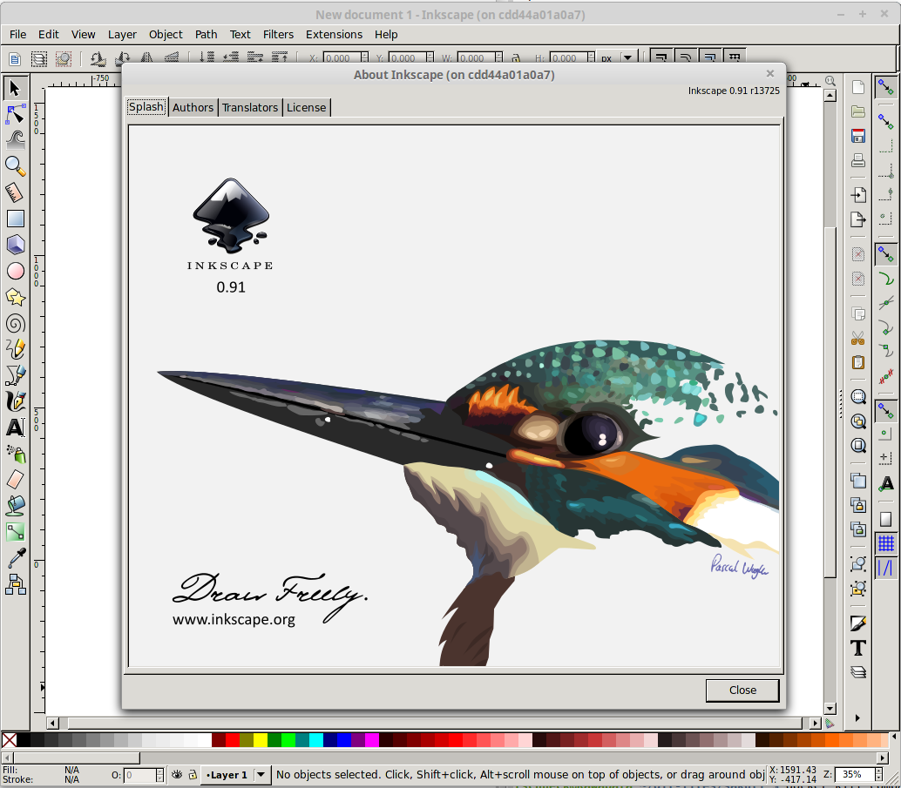
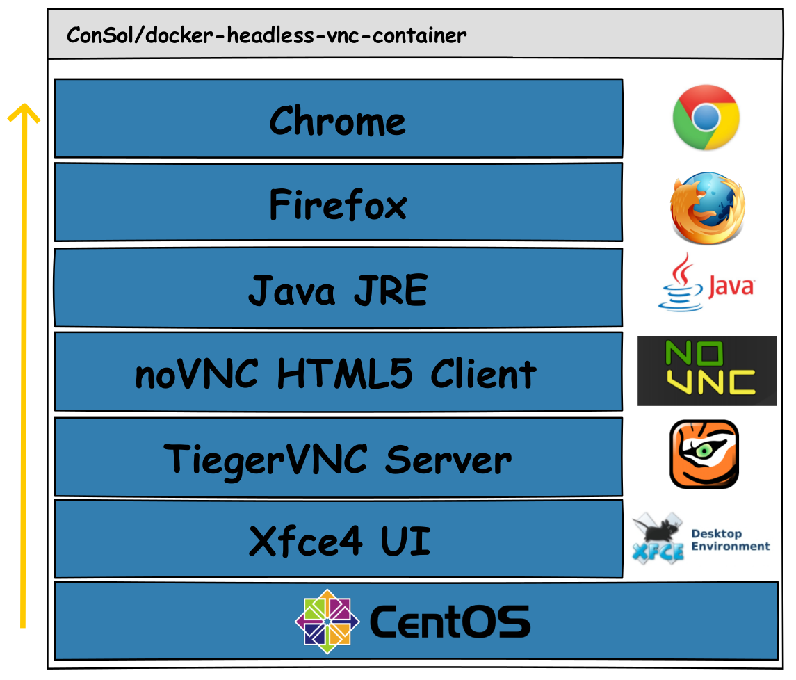
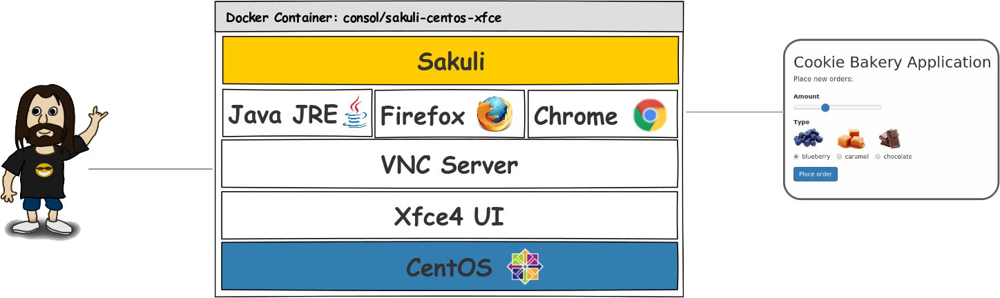
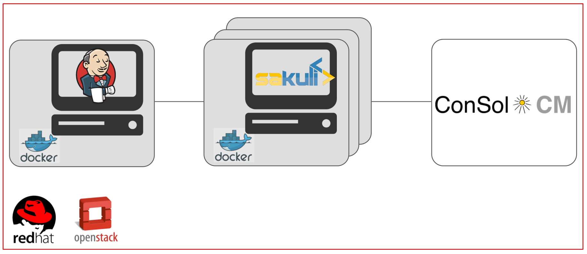
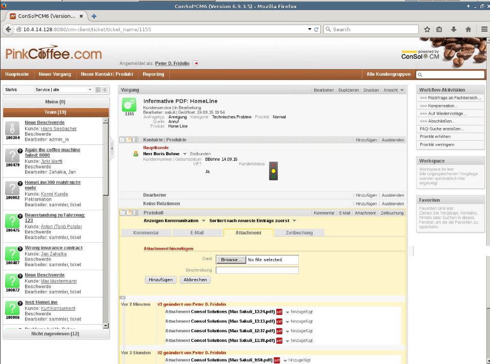

Containerized End-2-End-Testing
 +
+

Referent: Tobias Schneck, ConSol Software GmbH
Agenda
- Einordnung End-2-End-Testing
- Welche Vorteile bieten
Container-Technologien? - Der Sakuli End-2-End-Testing Container
- Integration in die CI-Umgebung
- Ausblick
Motivation für End-2-End-Testing

- Business-kritische Applikationen bestehen oft aus einer Vielzahl an Komponenten
- Applikations-Qualität aus Anwendersicht ist nur am Ende der Funktionskette messbar
- GUI ist die Schnittstelle zum End-User
Testpyramide

Anforderung an Testumgebungen
- Robust
- Keine "zufälligen" Fehler
- Fehler sind reproduzierbar
- Unabhängig
- Möglichst wenig Abhängigkeiten zu externen Systemen
- Umgebung sollte exklusiv zur Verfügung stehen
- Isoliert
- Tests haben keine Abhängigkeit untereinander
- Tests sollten parallelisierbar sein
- Schnell
- Kurze Laufzeiten mit aussagekräftigem Feedback
(vgl. Roland Huß - Integration Testing mit Docker)
Besonderheiten bei End-2-End Tests
- Unterschiedliche Testarten
- Regressionstests
- Funktionale Abnahmetests
- Parallele Tests in GUIs sind schwieriger
- Geteilte Testdaten oder Login-User
- User-Sessions mit Stati
- Cleanup von Testdaten
- Manueller Testaufwand > Aufwand für Automatisierung
Bietet die Container-Technologie Vorteile für das End-End-Testing?
- Isolation von Umgebungen
- Container-Repository für Versionierung und Verteilung
- Nachvollziehbarer Aufbau der Umgebung (Dockerfile)
- Start von Containern on-the-fly
- Einfache Parallelisierung
- Wenig Speicher-Overhead
- Teilen sich den selben Linux-Kernel
Virtuelle Maschinen vs. Container
(am Beispiel Docker)

Demo - Containerized GUIs
# start the docker container with VNC interface
docker run -it -p 5911:5901 -p 6911:6901 consol/centos-xfce-vnc
docker run -it -p 5912:5901 -p 6912:6901 consol/ubuntu-xfce-vnc
# start the docker container via x-forwarding
docker run -it -e DISPLAY=$DISPLAY -v /tmp/.X11-unix:/tmp/.X11-unix:rw rasch/inkscape


Container mit GUI?
- Oberfläche (X-Window), Steuerung, Apps

Anforderung End-2-End-Testing Tool
- Web-Test-Tools haben nur Zugriff auf DOM-Elemente
- Grafisch basierte Tests sind ressourcenintensiv
- OS-unabhängiges Framework
- Rendering testbar?
- Wie kann man Nicht-HTML-Inhalte testen bzw. damit umgehen?
=> Flash, PKI-Abfragen, Java Applets, Plugins

Was macht ?

|

|

|
Kategorie |

|
 |
|
Beschränkung auf den Browser |
|
|
|
|
Web Tests (DOM basiert) |
|
|
|
|
Open Source & Java API |

|
|
|
Automatisierbarkeit & Ergebnisauswertung über DB / Nagios / CI-Tools |
|
|
|
|
Unterstützung bei Testerstellung (Recorder, Screenshot-Finder) |

|
|

|
|
|
Kurzprofil
- Automatisierung von End-2-End-Tests
- End-2-End-Monitoring für Applikationen
- Erweiterbare "Forwarder"-Module
- SQL-Datenbank, Nagios oder andre Fremdsysteme
- Open-Source (Apache License 2.0)
- Entwicklung seit Mitte 2013
- Im Einsatz bei verschiedenen Branchen
- IT & Telekommunikation
- Banken & Versicherungen
- Bau & Innenausbau
File Structure

Test Case Aufbau
// tc.js
/*************************************
* Initialization of the JAVA backend
* and set warning and critical time
*************************************/
_dynamicInclude($includeFolder);
var testCase = new TestCase(60, 70);
var env = new Environment();
var appNotepad = new Application("gedit");
var region = new Region();
/******************************
* Description of the test case
******************************/
try {
//...
/************************************************
* Exception handling and shutdown of test case
**********************************************/
} catch (e) {
testCase.handleException(e);
} finally {
testCase.saveResult();
}
Aufruf von Sahi-Funktionen
// tc.js
/************************
* Call Sahi Functions
***********************/
_navigateTo("http://labs.consol.de/lang/en");
_highlight(_link("Projects"));
_click(_link("Projects"));
_highlight(_link("check_mysql_health"));
_click(_link("check_mysql_health"));
_highlight(_link("check_oracle_health"));
_click(_link("check_oracle_health"));
_setValue(_textbox("s"), "nagios");
_click(_link("Home[1]"));
testCase.endOfStep("project", 20);
Fluent API
/*** calculator app ***/
var calculatorApp = new Application("galculator")
.setSleepTime(1);
.open();
testCase.endOfStep("Open Calculator", 3);
/*** calculate 525 + 100 ***/
var calculatorRegion = calculatorApp.getRegion();
calculatorRegion.type("525");
env.sleep(2);
calculatorRegion.find("plus.png")
.click()
.type("100")
.find("calculate")
.click();
testCase.endOfStep("calculate 525 +100", 20);
Custom Functions
// tc.js
/**********
* TAB+ALT
*********/
function switchWindow() {
env.type(Key.TAB, Key.ALT);
}
/***************
* Go back to notepad
**************/
function backToNotepad() {
switchWindow();
env.type("Finish!\n\n");
}
Definition eines Ablaufs
// tc.js
/************************
* Some Variables
***********************/
var $cl_home = "http://labs.consol.de/lang/en";
var $cl_projekte = "Projects";
var $cl_c_mysql_h = "check_mysql_health";
var $cl_c_oracle_h = "check_oracle_health";
/************************
* Step for Notepad
***********************/
appNotepad.open();
env.type("Welcome to Sakuli!\n")
.type("I will help you to test your projects, like webapplications...\n")
.sleep(2);
testCase.endOfStep("notepad", 20);
/************************
* Step for labs.consol
***********************/
switchWindow();
_navigateTo($cl_home);
_highlight(_link($cl_projekte));
_click(_link($cl_projekte));
env.sleep(5).takeScreenshot("C:\\sakuli\\testscreenshot_after_5sec.png");
_highlight(_link($cl_c_mysql_h));
_click(_link($cl_c_mysql_h));
_highlight(_link($cl_c_oracle_h));
_click(_link($cl_c_oracle_h));
_setValue(_textbox("s"), "nagios");
_click(_link("Home[1]"));
testCase.endOfStep("project", 20);
/*****************
* print test client
*****************/
backToNotepad();
env.type("I can also test client applications, like gedit...\n")
.sleep(2);
testCase.endOfStep("print_test_client", 10);
Sakuli End-2-End-Testing Container

Demo - Sakuli-Containers
# start the docker container
docker run -it -p 5911:5901 -p 6911:6901 consol/sakuli-centos-xfce
docker run -it -p 5912:5901 -p 6912:6901 consol/sakuli-ubuntu-xfce
# start in parallel via docker-compose
docker-compose -f docker-compose_example_xfce.yml up
Erweiterbare Architektur

Nagios Integration

CI Demo Aufbau
CI Demo ConSol CM6
ssh cclusr@10.4.14.131
# start single container via docker-compose on remote host
cd ~/sakuli-example-testautomation-day/docker_e2e
docker-compose rm -f sakuli-cm_check_links && docker-compose up sakuli-cm_check_links
|  |
|
Ausblick & Ideen
- Headless Execution - Linux: xvfb & Docker, Windows: ?
- Video-Aufzeichnung der Testabläufe zur Fehlerdokumentation
- Asynchrone wait Funktionen / Callbacks
- Grafische Auswertung der Testergebnisse in CI-Umgebungen
Links

|
https://github.com/ConSol/sakuli
https://github.com/ConSol/sakuli-example-testautomation-day |
| https://twitter.com/sakuli_e2e | |
| https://twitter.com/consol_de |
Fragen?
Vielen Dank!

|
|